| 日付 | 2025年10月12日（日） |
|---|---|
| 山域 | 大菩薩 |
| メンバー | 単独 |
| 山行形態 | 日帰り |
| アクセス | 電車、バス |
| ルート (Map) | 上日川峠 (9:38) - (9:53) 福ちゃん荘 - (10:27) 雷岩 - (10:35) 大菩薩嶺 - (11:05) 大菩薩峠 - (11:28) 石丸峠 - (12:21) 榧ノ尾山 (12:40) - (13:40) 棚倉 - (13:55) コル (14:02) - (15:08) 小菅の湯 |
大菩薩嶺から東に伸びる長い尾根は牛ノ寝通りと呼ばれており、以前から気になる存在だった。
松姫峠へのバス便が廃止され、牛ノ寝通りを歩いて大菩薩に向かうのは厳しくなったが
逆ルートであれば、ほとんど下りのルートになるため、何とか行けそうだ。
3連休で混雑と割高料金になる高速を避けて、電車とバスで紅葉が始まったこの山に行ってみることにする。
甲斐大和駅に着いて人の多さに驚く。
8:10の始発バスに乗れず、いきなり計画が狂う。
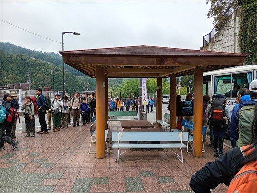
上日川峠に到着。標高1580m。
下界はどんよりしていたが、山の上はきれいな青空が広がっている。
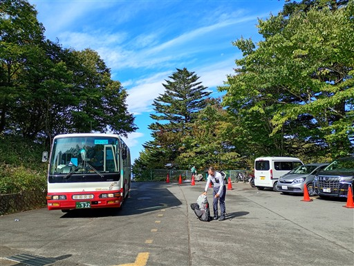
本日は帰りのバスまでに、コースタイムの8割の速度で歩く必要があった。
その計画からすでに45分遅れで、大菩薩嶺をスキップするかどうか迷う。
しかし、青空が広がっている中でスキップするのはもったいないので、
全速力で登って遅れを取り戻す計画にする。
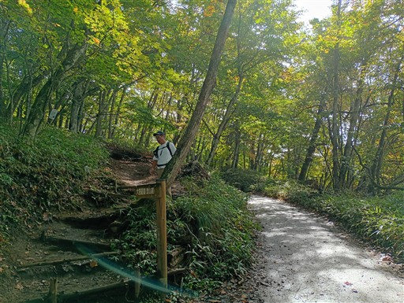
最初は傾斜の緩い道。緑色が美しい。
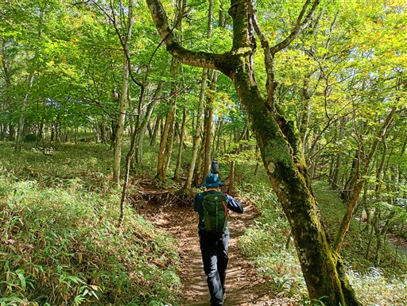
福ちゃん荘に到着。ここが大菩薩峠方面との分岐点。
予定通り、大菩薩嶺に向かう。
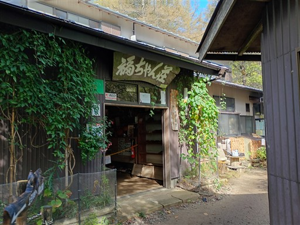
目指す稜線が見えている。
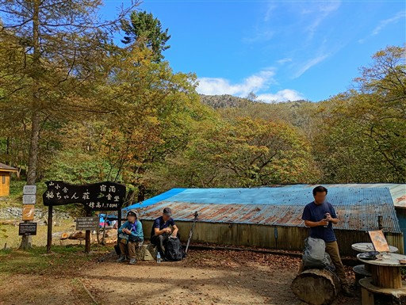
道は所々ぬかるんでいる。シカのヌタ場だろうか？
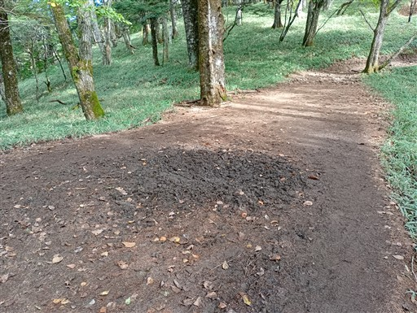
登山道はかなり混雑している。
比較的広い道なので、追い抜ける場所は追い抜いていくが
団体登山者が多いのが辛いところだ。
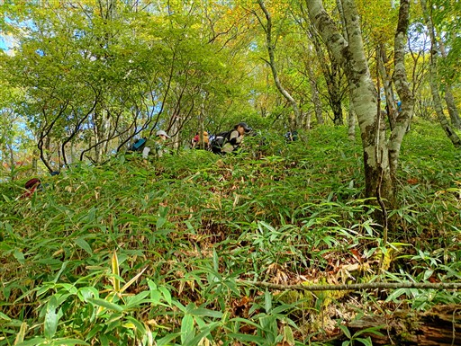
樹木が少なくなってくると、展望が広がる。日差しが少し暑いくらいだ。
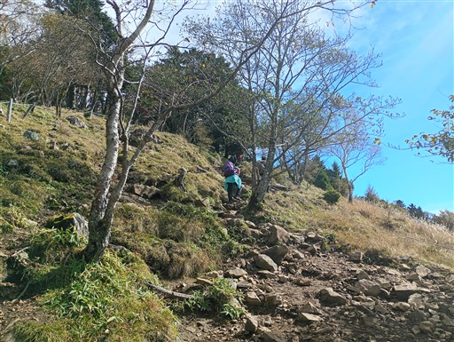
人の多い登山道。展望が良いので、多くの人が休んで景色を眺めている。
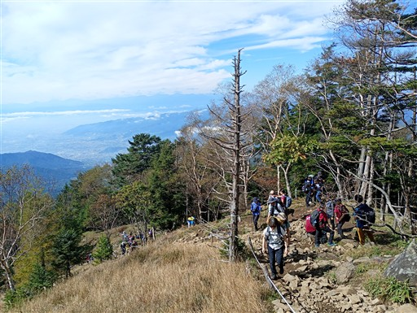
雷岩に到着。上日川峠から49分で、これが今の自分のマックス。
45分のバスの遅れをほぼ取り戻せた。本日の山行は登りが短いので無理がきく。
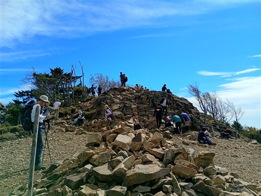
ここからは富士山がきれいに見える。
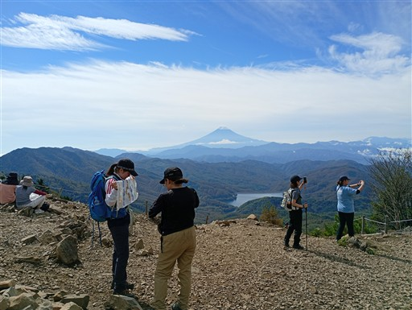
雷岩から少しの登りで大菩薩嶺山頂に到着する。標高2057m。
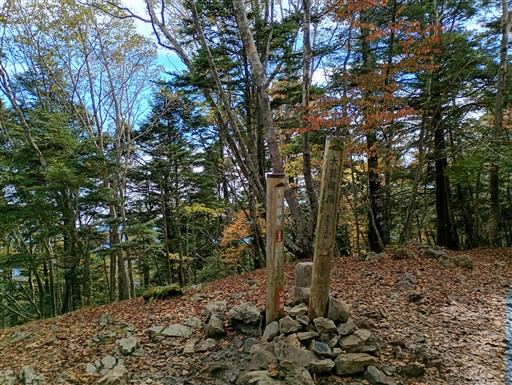
ここから大菩薩峠に向かう。
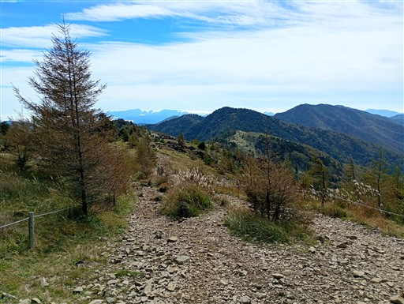
快晴ではないが、富士山を眺めながら歩ける展望の良い道だ。
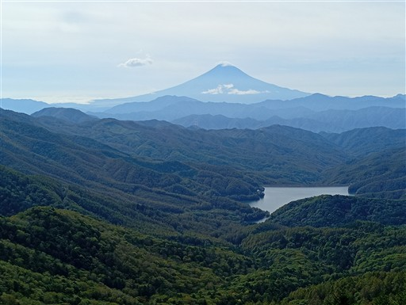
笹原広がる稜線。
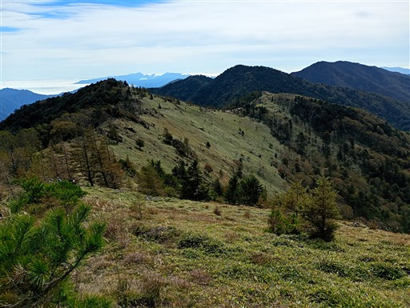
甲府盆地は靄に覆われている。
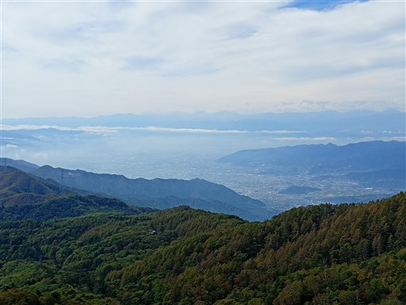
薄っすらと南アルプスの山々が見えている。
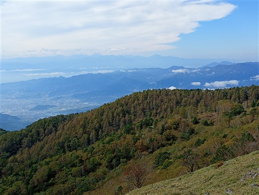
賽の河原に到着。2009年にこの小屋に泊まったことがある。
以前はドアがあったように思うのだが、なくなっている。
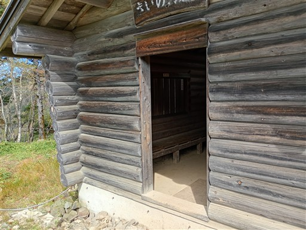
大菩薩峠に近づくと、奥多摩方面の展望が広がる。

大菩薩峠が見えてきた。
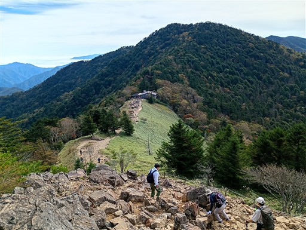
大菩薩峠に到着。
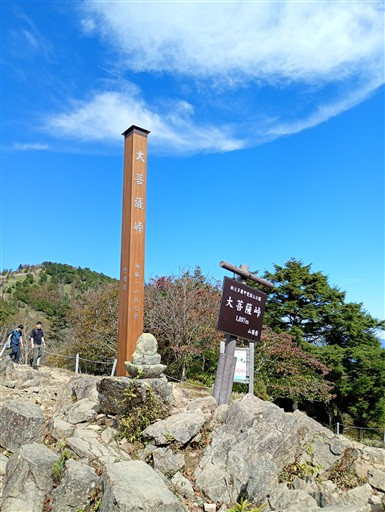
峠には介山荘が建つ。2015年に家族で登ったときには、ここでかき氷を食べた。
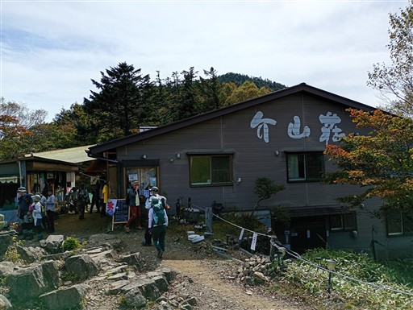
山荘前は大勢の登山者で賑わっている。
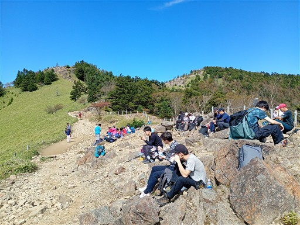
ここから稜線を南下する。いままでの喧騒が嘘のように、途端に静かになる。
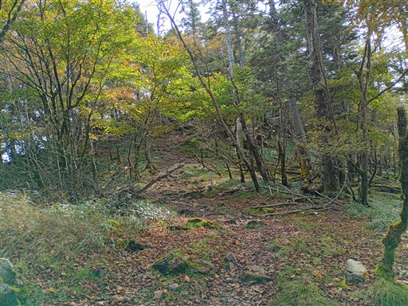
標高2000m近いこの場所は、紅葉が始まっている。
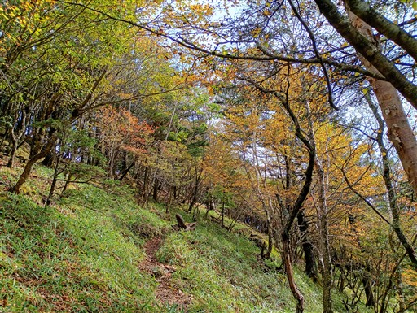
笹原広がる稜線。目の前に見えるのは石丸峠だ。
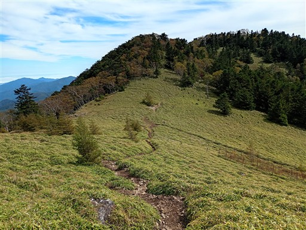
笹原の中に、所々でリンドウを見かける。
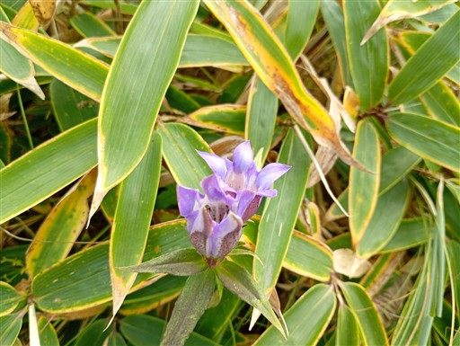
牛ノ寝通りとの分岐点。ちょっと踏み跡が薄い。
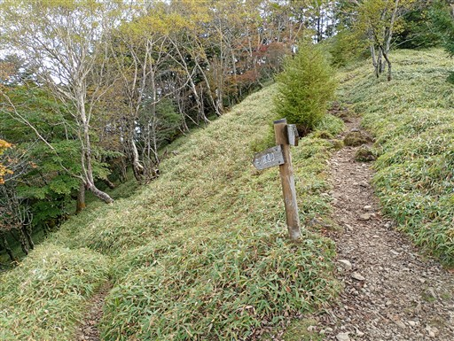
最初はどんどん下ったが、途中から傾斜の緩やかな稜線になる。
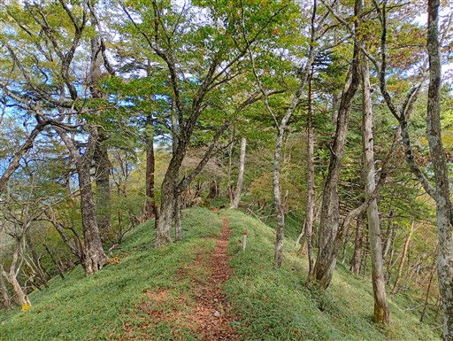
この道はキノコが多い。様々な種類のキノコを見かける。
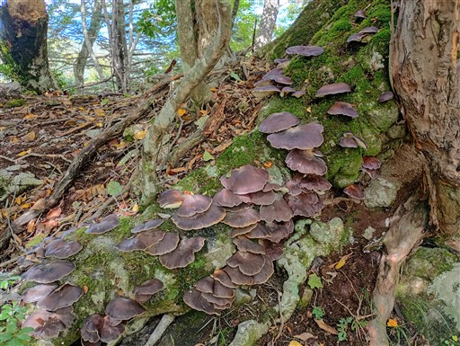
榧ノ尾山に到着。標高1429m。
稜線を下ってきて、全く登っていないので、山頂とは言えない。
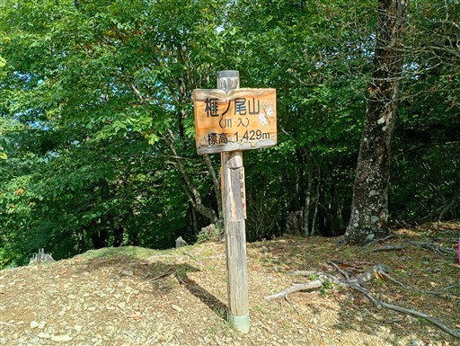
明るく開けてはいるが展望は広がらない。この尾根は、特に展望ポイントはない。
ここで昼食休憩をとる。
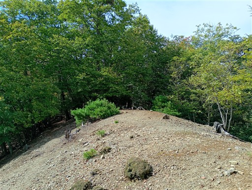
所々で立派な木を見かける。
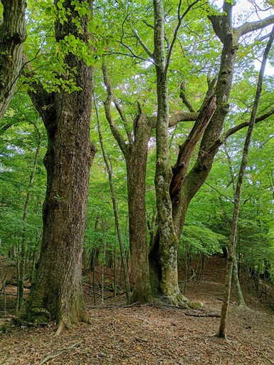
ここにもキノコ。
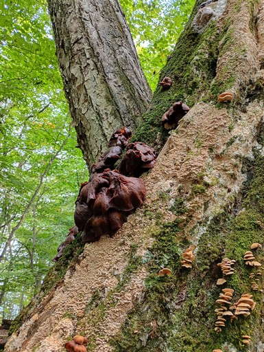
登山道から少し外れた場所にある狩場山に立ち寄る。標高1376m。
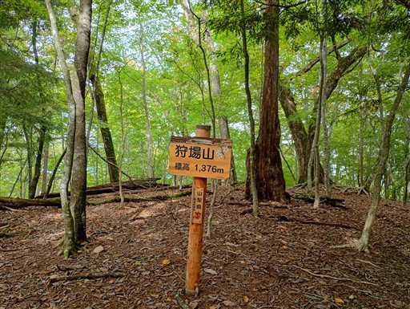
棚倉に到着。ここから稜線を外れて下山道に入って行く。
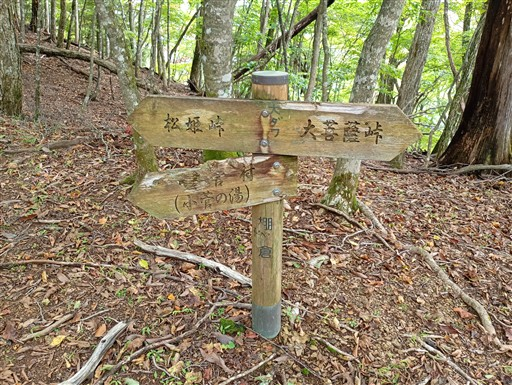
昔は棚倉小屋があったらしいのだが、このトタンはその痕跡だろうか？
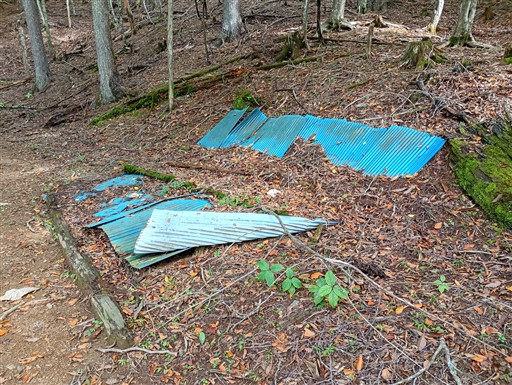
最初はトラバース道を下っていく。
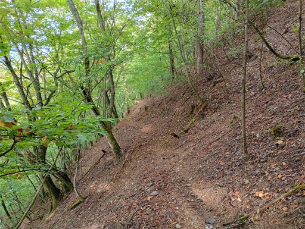
道はしっかりしている。
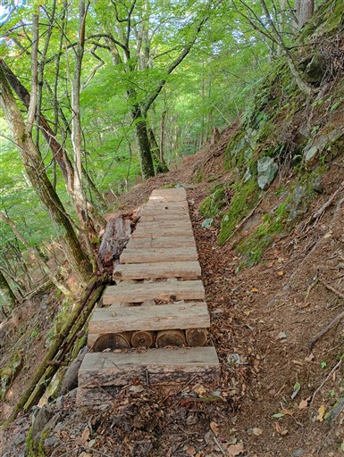
コルに到着。ここで登山道は尾根コースと沢コースに分かれるが、尾根コースを選択。
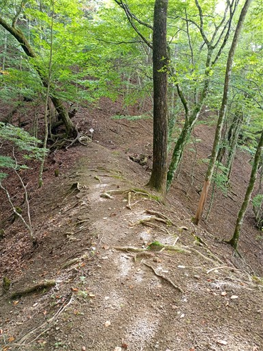
最後の方は作業道が入り乱れていたり植林地帯になったりで
さほど楽しい道ではなくなる。
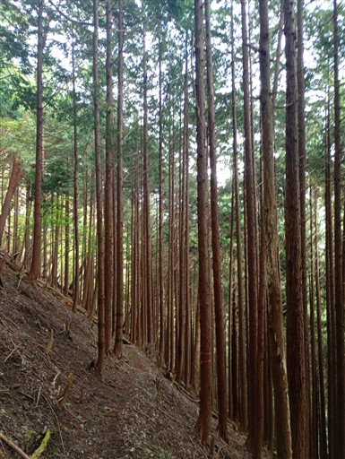
美しい形のキノコ。
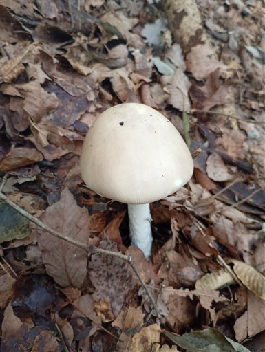
下山。
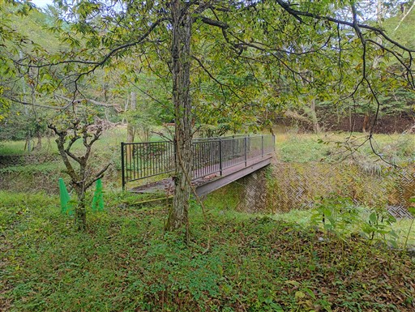
小菅の湯に到着する。標高730m。
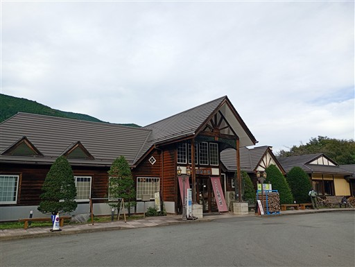
15:25発の奥多摩駅行きを想定して下山して来たのだが、
15:20発の上野原駅行きのバスがあるようだ。すっかりこのバスの存在を忘れていた。
今回の山行はトラブルから始まって最初は忙しかったが、後半はゆっくりと稜線を歩くことができた。
牛ノ寝通りで出会った登山者は一人で、喧騒と静寂のギャップがすさまじかった。
静かで美しい稜線ではあったけれど、大菩薩峠から滝子山に至る稜線の方が一日の長があるように思う。
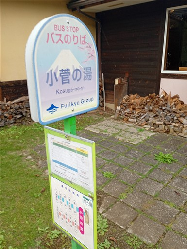